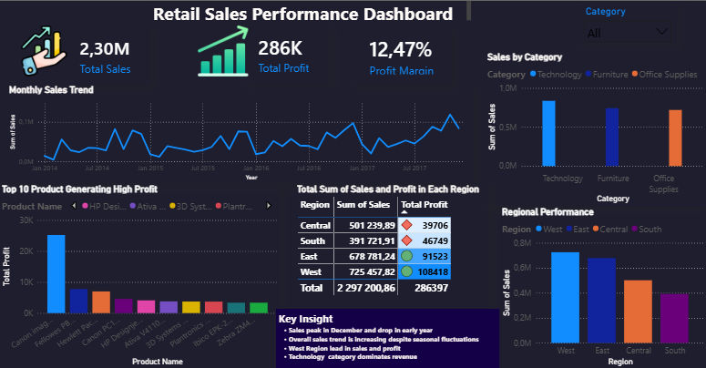
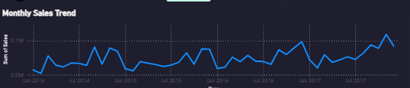
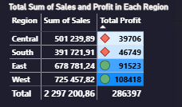

👤About Me
I am a BSc Data Science graduate majoring in Statistics and Computer Science from the University of KwaZulu-Natal. I enjoy working with data to solve meaningful problems, uncover patterns, and communicate insights in a way that supports better decisions.
My experience includes data cleaning, statistical analysis, dashboard development, and programming. I have worked on projects involving Power BI, SAS, Excel, SQL, Python, and C++, and I am especially interested in data science, AI, analytics, and statistical programming roles.
I care deeply about accuracy and reliability. For me, strong analysis starts with clean data, thoughtful validation, and clear interpretation that turns information into practical value.
🧠Skills
Programming
Python, SQL, C++, Java, HTML
Data & Analytics
Power BI, Power Query, SAS, Excel, Dashboarding, Data Cleaning
Statistics & Modelling
Logistic Regression, Sampling, Hypothesis Testing, Model Diagnostics, Statistical Inference
Professional Strengths
Attention to Detail, Accuracy, Problem Solving, Communication, Independent Work
Featured Projects
Sales Performance Dashboard – Power BI



Objective: To analyse sales data and identify important trends in revenue, monthly performance, category contribution, and profit-related insights that could support better business planning.
Data Cleaning: I used Power Query to clean and prepare the data before analysis by checking data types, reviewing blanks and errors, standardising date fields, and structuring the dataset for reporting.
How I Did It: I built an interactive dashboard in Power BI using KPI cards, charts, slicers, and DAX measures to track performance across time and product categories.
How I Checked for Accuracy: I compared dashboard totals with the source dataset, validated calculations, checked filter consistency, and ensured the visuals aligned with the underlying tables.
What I Found: December showed peak sales while January and February dropped after the holiday period, suggesting seasonality in demand. I also observed differences in category performance across time.
Impact: This type of dashboard helps businesses monitor results faster, identify weaker periods, and make better decisions around stock, promotions, and planning.
Tools Used: Power BI, Power Query, DAX, Excel
Cardiovascular Disease Risk Analysis – SAS


Objective: To identify factors associated with cardiovascular disease and determine which variables significantly contributed to a higher likelihood of the event of interest occurring.
Data Cleaning: I reviewed the structure of the dataset, checked variable formats, prepared the categorical and quantitative variables correctly, and ensured the data was suitable for statistical modelling.
How I Did It: I performed one-way summaries, chi-square tests of association, and logistic regression modelling. I then reduced the model by removing non-significant variables and selected the best-fitting final model.
How I Checked for Accuracy: I assessed goodness-of-fit, checked for overdispersion, reviewed influential observations, and compared model findings with association test results to confirm reliability.
What I Found: Age, serum sodium, and ejection fraction were identified as significant predictors in the final model, highlighting important clinical indicators of cardiovascular risk.
Impact: This kind of analysis can support evidence-based healthcare by helping researchers and professionals focus on higher-risk patients and the most meaningful predictors of disease.
Tools Used: SAS, Logistic Regression, Chi-Square Testing, Model Diagnostics
General Household Survey Data Analysis


Objective: To estimate the average monthly salary of households in South Africa, the proportion of households earning below the R4500 threshold, and the total monthly salary generated by households whose main source of income is salary.
Data Cleaning: I removed unrealistic zero values in household salary, removed non-response observations, and filtered the dataset using the main income source variable so the analysis focused on relevant households.
How I Did It: I compared Simple Random Sampling Without Replacement, Simple Random Sampling With Replacement, Stratified Sampling, and Cluster Sampling to estimate the population parameters of interest.
How I Checked for Accuracy: I compared confidence intervals across methods and evaluated which sampling design produced narrower intervals and more precise estimates.
What I Found: Stratified sampling produced the narrowest confidence intervals and emerged as the most effective method for obtaining precise and reliable estimates.
Impact: These findings can support policy makers, economists, and government planning by giving insight into income levels, poverty-related vulnerability, and economic decision-making.
Tools Used: SAS, Sampling Methods, Confidence Intervals, Statistical Inference
Extinction Protocol – Interactive C++ Game


Objective: To build an interactive game that combines storytelling, decision-making, and programming logic in a complete working application.
How I Did It: I developed the game using C++/CLI and WinForms, applying object-oriented programming, templates, interactive forms, and resource tracking systems for progress, fuel, and oxygen.
How I Checked for Accuracy: I tested gameplay flow, checked that progress and resource values updated correctly, reviewed feature behaviour, and made sure the interface responded properly to user choices.
What I Built: A story-driven survival game where the player must make decisions, answer questions, and manage limited resources while searching for a habitable planet as Earth is being destroyed.
Impact: This project demonstrates my ability to build a complete system from concept to implementation, combining logic, user interaction, and technical creativity.
Tools Used: C++/CLI, WinForms, Object-Oriented Programming, Templates
📬Contact
📧Email: Jobenqobile3@gmail.com
🔗LinkedIn: View LinkedIn Profile
💻GitHub: View GitHub Profile
📍Location: South Africa
📄CV: Download My CV